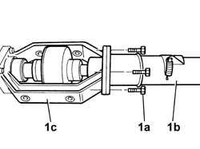
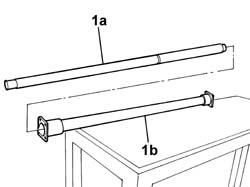

2410A64 SHELL WITH REAR TRACTION TRANSMISSION SHAFT - R.R.
- Path
- Procedures > 24 TRANSMISSION > 2410 TRANSMISSION SHAFT > 2410A TRANSMISSION SHAFT BETWEEN THE TRANSMISSION AND THE DIFFERENTIAL > 2410A64 SHELL WITH REAR TRACTION TRANSMISSION SHAFT - R.R.
- Kind
- repair procedure (removal / refitting; the operation number is the code)
- Applies to
- engines: 2.0 16V, 2.8 JTD 8V; all production periods
- Interactive page
- https://sloeber94.github.io/elrnDB-fDct/en/#/244001055
Applies to: engines: 2.0 16V, 2.8 JTD 8V; all production periods; only with equipment: 4X4
 Removing
Removing
 Refitting
RefittingOp. 2410A18 TRANSMISSION WITH JOINTS INCLUDED - R.R.
1. Undo the bolts (1a) securing sleeve (1b) to the viscous coupling assembly (1c).

Applies to: engines: 2.0 16V, 2.8 JTD 8V; all production periods; only with equipment: 4X4
1. Separate propeller shaft (1a) from sleeve (1b).

Applies to: engines: 2.0 16V, 2.8 JTD 8V; all production periods; only with equipment: 4X4
Refitting
Removing- Fit the transmission shaft in its seat on the sleeve.
- Fit the sleeve with the propeller shaft to its seat on the differential coupling assembly and tighten the fixing bolts.